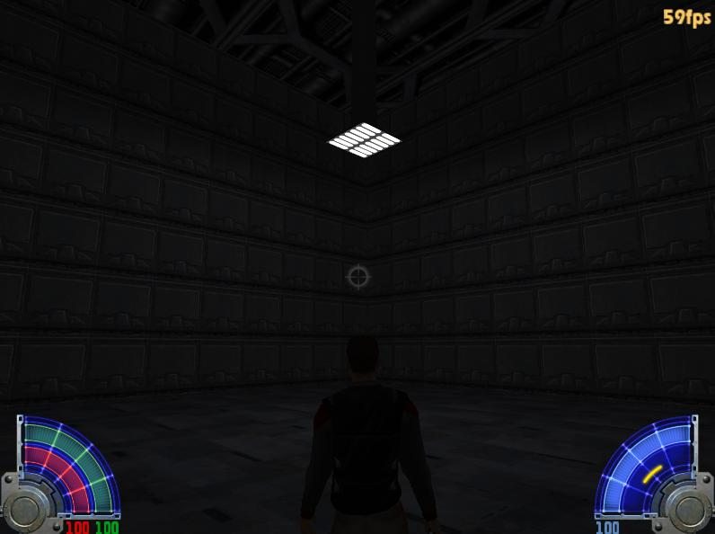

>> Mapping Academy - Tutorials <<
(c) 2004 www.darth-arth.de
Licht
Author: Killermic ( Michael S.)
VORAUSSETZUNGEN:
>> Installation GTK - Radiant ( Tutorial )<<
>> Mein erster Raum ( Tutorial )<<
>> Kompilieren mit Q3map2 ( Tutorial )<<
In dieser Lehreinheit (Tutorial) lernen wir in unserem ersten Raum ein Licht zu setzen.
Später auch ein paar Tricks um
das Licht schöner aussehen zu lassen.
Dieses Tutorial ist für JK - JA ausgelegt.
Nachdem wir unseren ersten Raum erstellt haben möchten wir ein richtiges Licht reinsetzen.
Zuerst rufen wir unseren ersten Raum
im Editor auf. Key: light Value: 350
Der sieht jetzt ungefähr so aus:
Jetzt setzen wir erst einmal unser erstes Licht.
Mit einem Rechtsklick auf das Raster bekommen wir das Entity-Menü und klicken
"Light" an.
Auf der Map erscheint jetzt das Light-Entity und eine Box, wo die Stärke des Licht
abgefragt wird.
ACHTUNG: 100 ist ein mäßig starkes Licht, jedoch 300 ist schon ein sehr intensives Licht. Aber die Beleuchtung
hängt immer von dem Typ eurer Map an. Benutzt ihr sehr helle Texturen, so fällt Stärke 100 fast nicht auf. Doch benutzt ihr dunkle Texturen, fällt Stärke 100 schon ziemlich gut auf. Auch auf die Fläche die beleuchtet werden soll, kommt es sehr stark an.
Da wir eine große Fläche beleuchten wollen nehmen wir 4 Lichter, mit jeweils der Stärke 500.
Jetzt schieben wir noch die Light-Entities dort hin, wo wir die Quellen des Lichts haben wollen.
Dazu halten wir SHIFT gedrückt und klicken das Light-Entity an. Danach
das Entity einfach mit der Maus an den gewünschten ort schieben.
Jetzt setzen wir die Kenntnisse aus dem Tutorial "Kompilieren mit Q3map2" ein.
Kompiliert mit genau den selben Einstellungen von Q3map2, wie in den Optionen, dann ergibt es ein für den Anfang gutes Licht.
Jetzt sehen wir unser erstes Licht im
Spiel:)
Realistische Lichtquellen (für etwas Fortgeschrittene)
Realistische Lichtquellen sind oft das Etwas, was eine gute Map ausmacht. Darum wollen wir das jetzt herstellen.
Dazu löschen wir die Lichter die wir vorher gesetzt haben, und machen eine (simple) Konstruktion, die eine Lampe darstellen soll. Darunter habe ich ein Light-Entity gesetzt, mit der Stärke 300:
Nachdem wir kompiliert haben, fällt es schon auf:
Es ist zu dunkel! Aber wenn wir das Licht noch heller machen, sieht es wieder unrealistisch aus. Auch eine zweite Lichtquelle sähe nicht gut aus.
Jetzt nutzen wir eine Einstellung im "Worldspawn" aus. Im Worldspawn werden Einstellungen gemacht, die für die ganze Map gelten.
Um Einstellungen am "Worldspawn" zu machen, klicken wir einen einfachen Wand-,
Decken- oder Boden-Brush und drücken die Taste "N":
Und zwar tragen wir einen "ambient" - Wert ein. Wir geben folgendes ein:
KEY: ambient
VALUE: 40
ACHTUNG: Ein "ambient"-Wert sollte sehr klein bleiben! 40 ist schon ziemlich hoch. Für eine gut beleuchtete Map sollte ein "ambient"-Wert von 10 reichen, um die schwarzen Flächen, wo kein Licht hinkommt, ein wenig aufzuhellen.
Es kommt immer auf die Atmosphere und die Art eurer Map an, für helle Outdoor (aussengelände)
Maps , kann man sehr hohe Ambient-Werte benutzen, wogegen für gut beleuchtete
Indoor (Innenraum) Maps ein kleiner Wert ausreicht. Meistens heißt es einfach
"ausprobieren" und den richtigen Wert selbst herausfinden.

Glückwunsch! Jetzt stehst du in deinem ersten Raum mit realistischer Lichtquelle. (Auf dem Screenshot sieht es etwas dunkel aus, aber im Spiel ist es in Ordnung)
Generelle Fragen
Jetzt wollen wir nachträglich von dem Light-Entity die Stärke ändern. Aber wir machen kein Neues und löschen das Alte, sondern wählen das Alte einfach an mit SHIFT + Anklicken und drücken daraufhin >N<. Das ruft das Entity-Menü auf. Das sollte so aussehen:
Nun klicken wir "light 300" an und ändern unten, in den Eingabefeldern folgendes:
Und drücken >ENTER<
Jetzt ist das Licht etwas stärker.
Farbiges Licht
Ein rotes Licht machen? Kein Problem!
Wir wählen einfach unser Licht an und drücken >K<
Jetzt erscheint ein Menü, in dem man die Farbe wählen kann.
Jetzt stellen wir dort Rot ein.
Jetzt ist nach einem Klick auf "OK" euer Licht rot. Hier kann man natürlich auch alle möglichen Einstellungen vornehmen um Lichter farbig zu machen :)